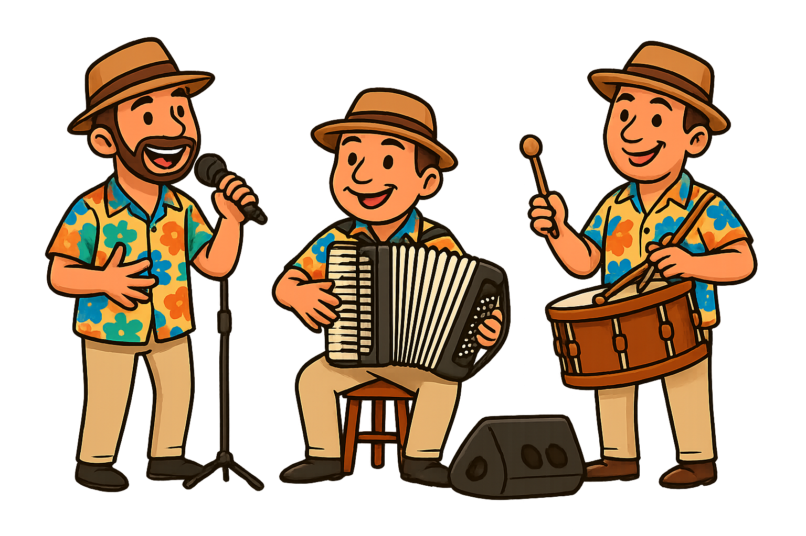

Somente para uso interno
Forro do xenhenhém
Elba ramalho
Morena forrozeira do cangote suado
Tô ficando arriado com você, meu bem
Com esse rebolado teu corpinho fica mole
E nesse bole-bole, nesse vai-e-vem
O coração da gente chega a latejar
A gente só deseja passar bem
Com você meu bem
No xenhenhém, no xenhenhém, no xenhenhém
Com você meu bem
No xenhenhém, no xenhenhém, no xenhenhém
Quem foi esse inteligente que inventou o forró
Fez a morena levantar pó
Ele é um artista, trabalhou bem
E a morena forrozeira é de quem
Estiver disposto pra ganhar no xenhenhém
Xenhenhém, xenhenhém, xenhenhém
Xenhenhém, xenhenhém, xenhenhém
Xenhenhém, xenhenhém, xenhenhém
Vou fazer tudo pra ganhar no xenhenhém
Xenhenhém, xenhenhém, xenhenhém
Xenhenhém, xenhenhém, xenhenhém
Xenhenhém, xenhenhém, xenhenhém
Vou fazer tudo pra ganhar no xenhenhém
Bulir com Tu
Antonio Barros
Se você pensa que chega de madrugada
Assim como quem não quer nada
Meu bem se enganou
Não adianta se deitar na rede
Porque a minha sede você ou fazer tudo pra você perder o sono
Me tirar desse abandono
Eu vou me sacudir
Eu vou lá dentro e pego uma viola
E de repente faço um verso pra você sentir
Eu quero ver amanhecer o dia
Assim nessa agonia
Eu vou bulir
Eu vou bulir, bulir com tu, eu vou bulir
Eu vou bulir, bulir com tu, eu vou bulir
Eu vou bulir, bulir com tu, eu vou bulir
Eu vou bulir, bulir com tu, eu vou bulir
Confidência
Jorge de Altinho
Eu tenho um segredo menina cá dentro do peito
Que a noite passada quase que sem jeito
Vendo a madrugada eu ia revelar
Quando um amor diferente tava nos meus braços
Olhei pro espaço e vi lá no céu
Uma estrela cadente se mudar
Ai eu lembrei das palavras doces que um dia eu falei pra alguém
Que tanto, tanto me amou me beijou como ninguém
Que flutuou nos meus braços entrou nos meus planos
E os nossos segredos confidenciamos sem hesitar
Anjo Querubim
Petrúcio Amorim
Fiz você pra mim
Meu brinquedo
Meu anjo querubim
Meu segredo
Guardado só pra mim
Meu amor mais louco
Até de tanto amar
Fiz também algo
Pra gente ninar
Uma criança
Pra gente adorar
Tudo no sufoco
E você não gosta mais de mim
Vem dizer que eu não soube dar amor
E achar que a vida é mesmo assim
Cada um leva o barco sofredor
Meu baião
Coração
Arranca essa dor do meu peito pra eu não chorar
Meu baião
Coração
Arranca essa dor do meu peito pra eu não chorar
Comprei sururu, camarão
Fiz batida de caju
Dancei rumba e até maracatu
Pra te fazer feliz
Fui até Natal
Salvador, Paraíba, Bacabal
Em Belém você quase passou mal
E eu te fiz feliz
E você não gosta mais de mim
Vem dizer que eu não soube dar amor
E achar que a vida é mesmo assim
Cada um leva o barco sofredor
Forróbodó
Mastruz Com Leite
Fui um forró
Pra cá do Caicó
Ninguém bodô no forróbodó
Fui um forró
Pra cá do Caicó
Ninguém bodô no forróbodó
Ninguém bodô no forróbodó
Ninguém bodô no forróbodó
Ninguém bodô no forróbodó
Seu Malaquias e Maria Benta
Quase me mata com
Seu peba na pimenta
Zé Caxangá era o tocador
Mas só tocava, ninguém bodô
Ninguém bodô no forróbodó
Ninguém bodô no forróbodó
Ninguém bodô no forróbodó
Ninguém bodô no forróbodó
E Carolina chegou também
Mas só queria dançar o xenhenhem
Zé Caxangá era o tocador
E só tocava ninguém bodô
Ninguém bodô no forróbodó
Ninguém bodô no forróbodó
Ninguém bodô no forróbodó
Tinha pra mais de quinhentos convidados
Dezessete e Setecentos, ta enganado!
Dezesseis e setecentos, oxente fique calado!
Dezessete e setecentos, tá enganado!
Ninguém bodô no forróbodó
Ninguém bodô no forróbodó
Ninguém bodô no forróbodó
Ninguém bodô no forróbodó
Ô mana deixa eu ir
Ô mana eu não vou só
Ô mana deixa eu ir pro Forróbodó
Bem pra cá do Caicó
Pro Forróbodó
Bem pra cá do Caicó
Pro Forróbodó
Bem pra cá do Caicó
Pro Forróbodó
Bem pra cá do Caicó
Pro Forróbodó
Bem pra cá do Caicó
FINAL DO BLOCO FORRO LENTO 1
Hora do Adeus
Luiz Gonzaga
O meu cabelo já começa prateando
Mas a sanfona ainda não desafinou
A minha voz vocês reparem eu cantando
Que é a mesma voz de quando meu reinado começou
Modéstia à parte, mas se eu não desafino
Desde o tempo de menino
Em Exu, no meu sertão
Cantava solto que nem cigarra vadia
E é por isso que hoje em dia
Ainda sou o rei do baião
Eu agradeço, ao povo brasileiro
Norte, Centro, Sul inteiro
Onde reinou o baião
Se eu mereci minha coroa de rei
Esta sempre eu honrei
Foi a minha obrigação
Minha sanfona minha voz o meu baião
Este meu chapéu de couro e também o meu gibão
Vou juntar tudo, dar de presente ao museu
É a hora do adeus
De Luiz rei do baião
Cacimba Nova
Fazenda Cacimba Nova
Foi bonito o teu passado
Ainda estás dando a prova
Pelo o que vê-se a teu lado
Um curral grande, pendido
Um carro velho, esquecido
Pelo sol todo encardido
Sentido, sem paradeiro
Falta de juntas de bois
Que lhe levavam de dois
Obedecendo ao carreiro
Resistente casarão
Em ti as festas rolavam
Quando os vaqueiros brincavam
Em corridas de mourão
Um touro velho berrando
No tronco do pau fungando
Os seus chifres amolando
Com o maior desespero
Um heroísmo tamanho
Em defesa do rebanho
Fazendo medo a vaqueiro
Quem te vê sai suspirando
Lamentando cada instante
Vendo o tempo devorando
O teu passado brilhante
Mas rogo a Deus para um dia
Reinar-te ainda alegria
Paz, sossego e harmonia
Voltando a felicidade
Que um sentimental vaqueiro
Passando no seu terreiro
Solte um aboio de saudade
E, e, e, o, e
E, boi
Forró Casamenteiro
Os 3 do Nordeste
Nesse forró mulher não fica pra titia
em um padre e tem juiz, tem até a sacristia
Pode dançar a vontade, se agarrar com alegria
Com toda liberdade, mexer no que não mexia
Brincar a noite toda sem acanhamento
Porque o casamento o padre faz no outro dia
A senhorita que já ta no caritó
Venha logo pro forró pra acabar com essa mania
De viver se lamentando de fazer o que fazia
Vai logo se arrumando se era isso que queria
Não ligue pra besteira, acabe esse lamento
Porque o casamento o padre faz num outro dia
Homem casado pra entrar nesse forró
Tem que ser de palito e trazer sua maria
Dançar com muito respeito cavalheiro e companhia
Se não dançar direito a gente chama a policia
Porque o casamento é pra quem ta no caritó
E aqui nesse forró o padre casa todo dia
Forró de tamanco
Os 3 do Nordeste
No meu forró, entra preto e branco
Quero ver todo mundo calçadinho de tamanco
A noite inteira quero ver o barulhão
Das menininhas arrastando tamanco no chão
É, é, de tamanco, mulher
No meu tempo de criança
Eu era menino chato
Que não me falhe a lembrança
Eu só andava de sapato
Mas agora eu sou grande
E mudei de opinião
Acho muito bonitinho
O arrastado do tamanco no chão
É, é, de tamanco, mulher
No meu forró, entra preto e branco
Quero ver todo mundo calçadinho de tamanco
A noite inteira quero ver o barulhão
Das menininhas arrastando tamanco no chão
É, é, de tamanco, mulher
No meu tempo de criança
Eu era menino chato
Que não me falhe a lembrança
Eu só andava de sapato
Mas agora eu sou grande
E mudei de opinião
Acho muito bonitinho
O arrastado do tamanco no chão
É, é, de tamanco, mulher
É, é, de tamanco, mulher
Sanfona Sentida
Dominguinhos
Vem amor, vem cantar
Pois meus olhos
Ficam querendo chorar
Deixe a mágoa pra depois
O amor é mais importante a dois.
Chora sanfona sentida
Em meu peito gemendo
Vai machucando
E o meu peito de amor vai morrendo
Quanto mais chora
Me entrego todinho ao amor
E teu gemido disfarça
Em m´alma essa dor